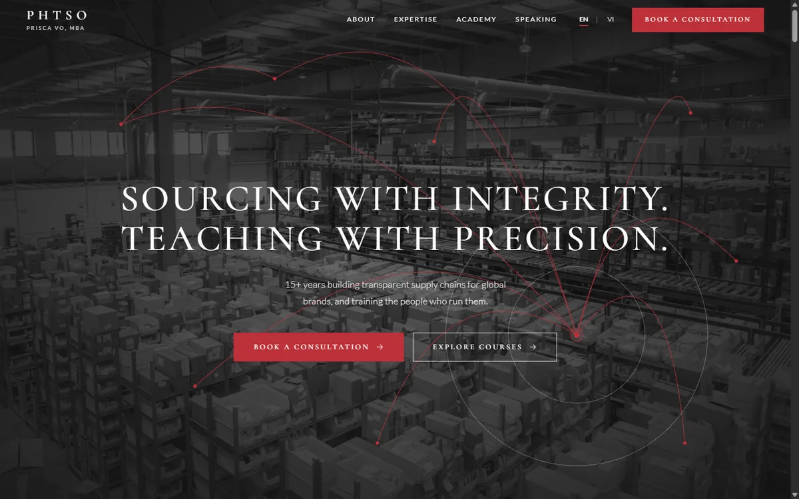
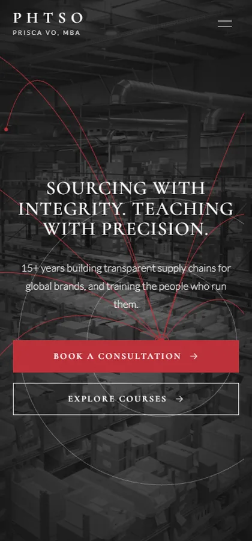
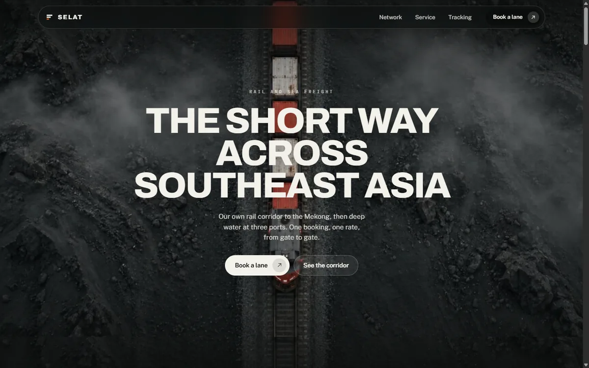
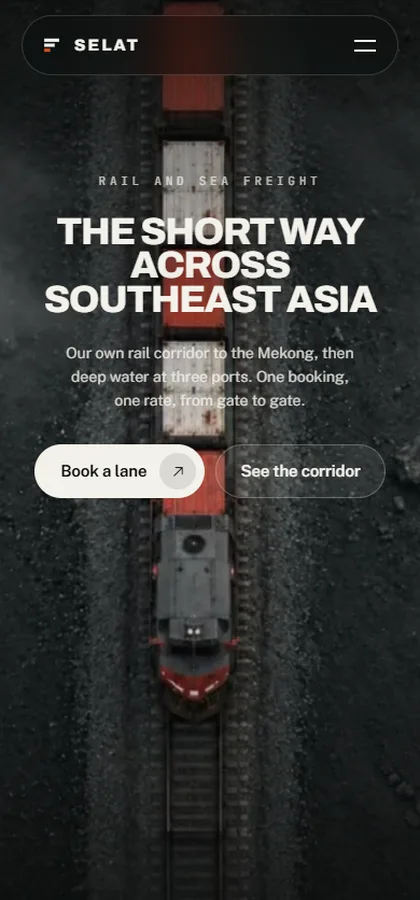
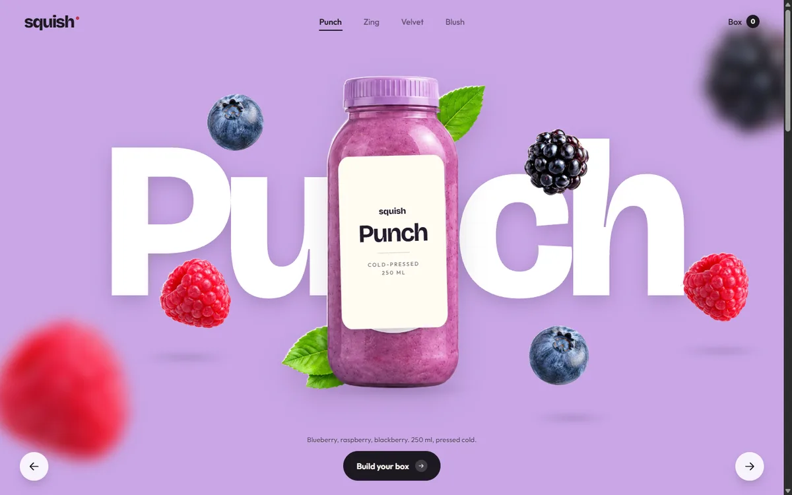
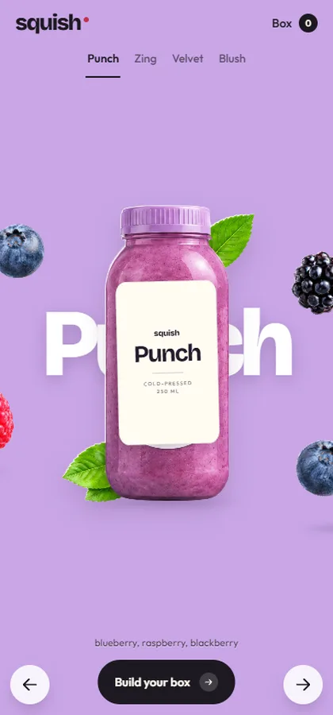
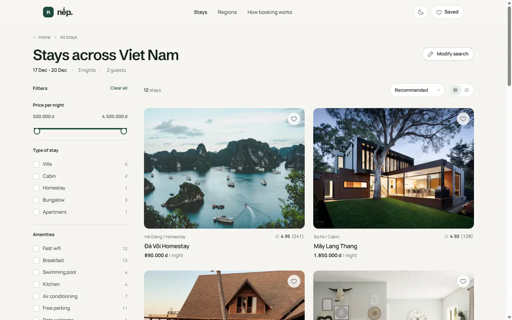
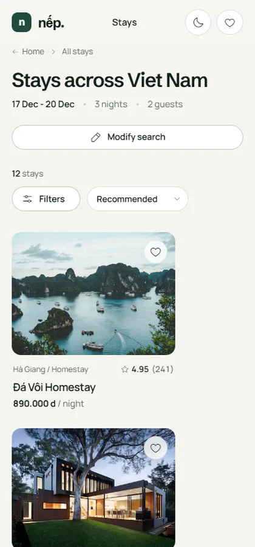

-
01
Prisca Vo, personal portfolio
A six-page bilingual site for a global sourcing director and business lecturer. Editorial layout, red and cream palette, calm scroll motion.
- Type
- Personal brand
- Focus
- Typography, i18n


-
02
Selat, rail and sea freight
A cinematic landing page where scrolling flies the camera up from a container train into the clouds. Includes a working shipment tracker.
- Type
- Marketing site
- Try it
- Track SLT-4471-882


-
03
squish, cold-pressed juice
A bright product brand. Each flavour floods the screen in its own colour, then a build-your-box cart prices the order live with a subscription discount.
- Type
- E-commerce
- Try it
- Arrow keys, then build a box


-
04
Nếp Stays, boutique booking
A complete booking flow for stays across Viet Nam: search, filters, gallery, checkout with validation and a downloadable calendar invite.
- Type
- Product UX
- Try it
- Book a stay end to end

